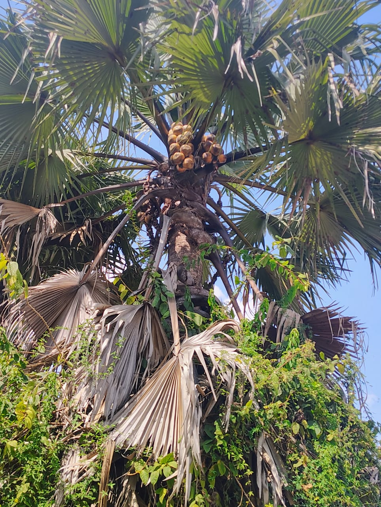
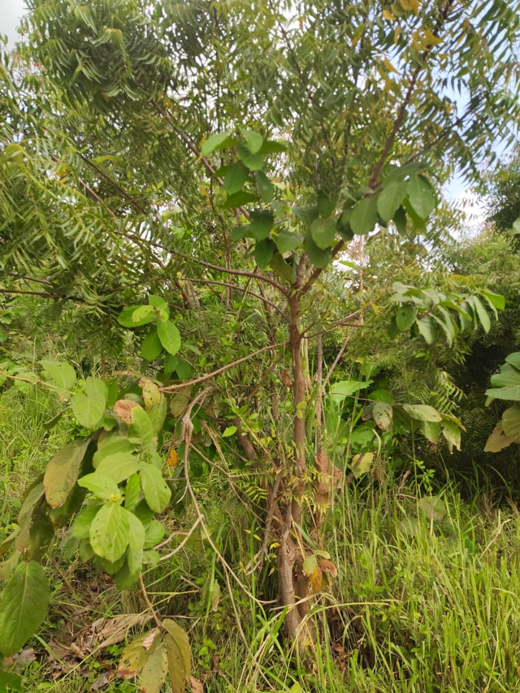
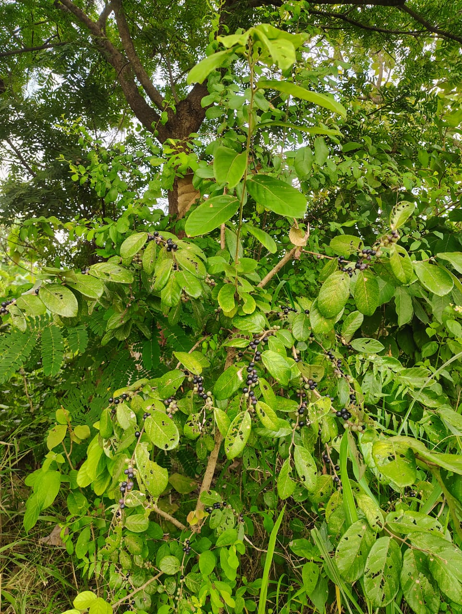

Sur le plan évolutif, les angiospermes (plantes à fleurs) se sont d'abord diversifiées autour de lignées ancestrales proches des dicotylédones, avant que les monocotylédones, puis les graminées, n'émergent au Crétacé.






